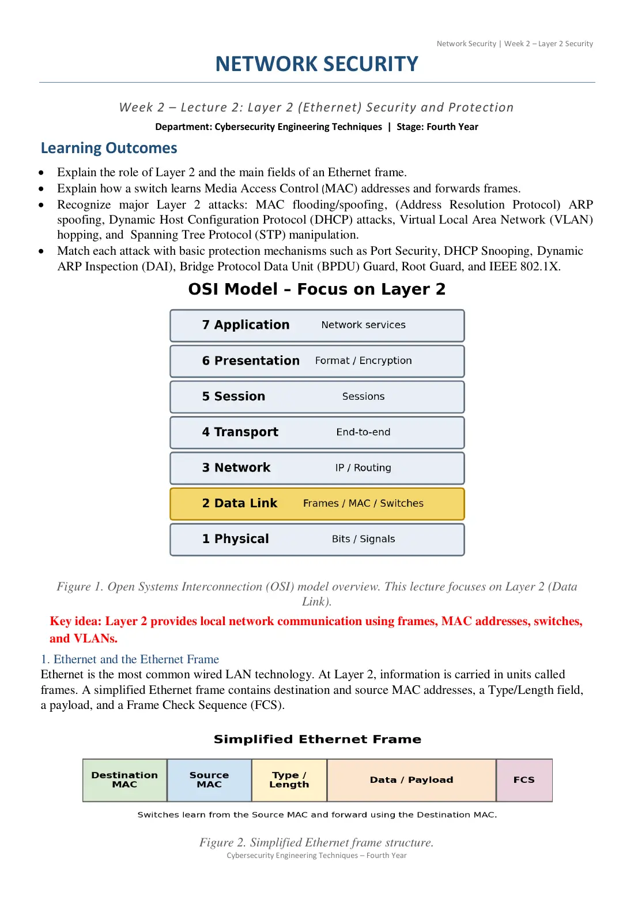
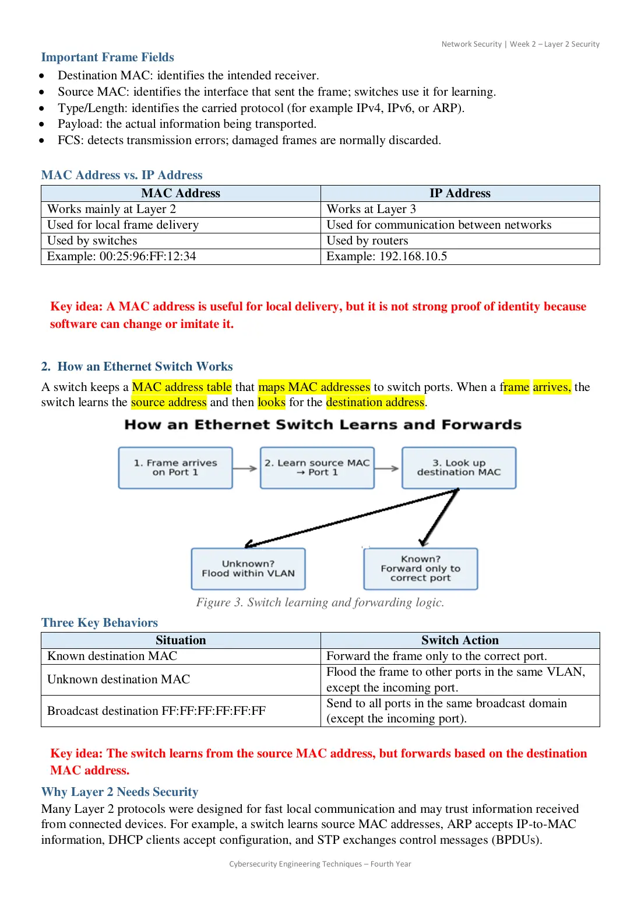
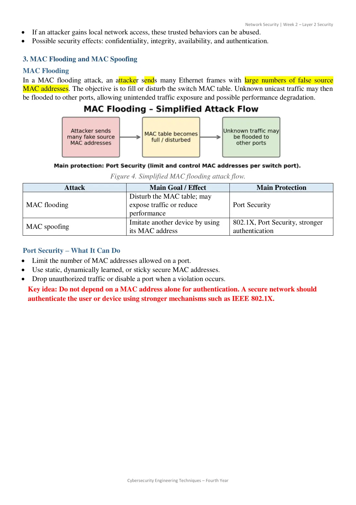
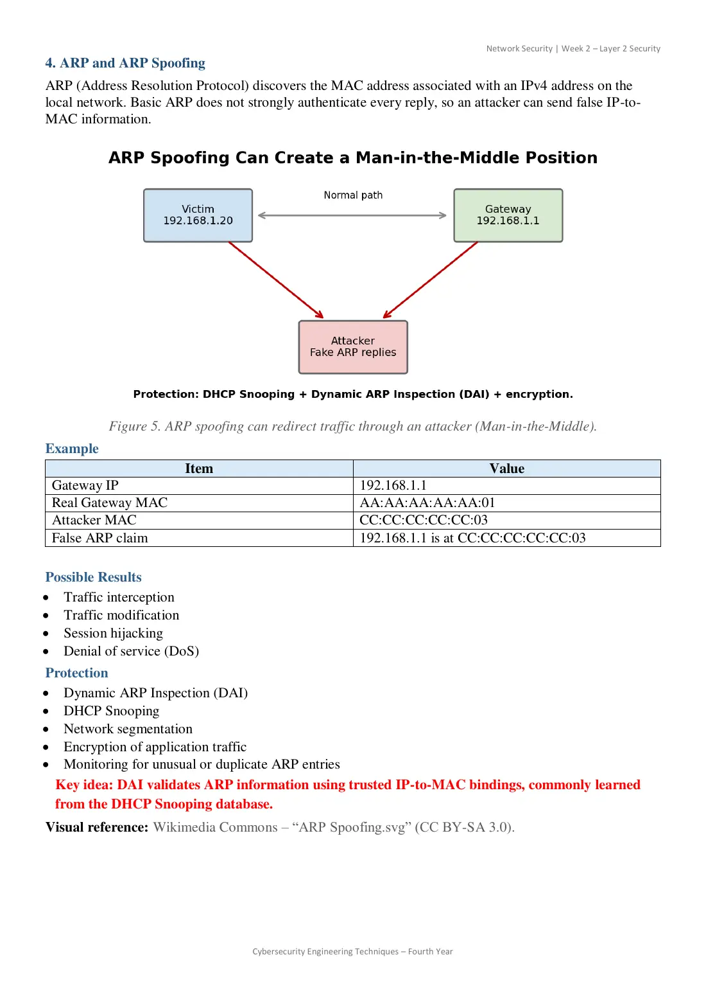
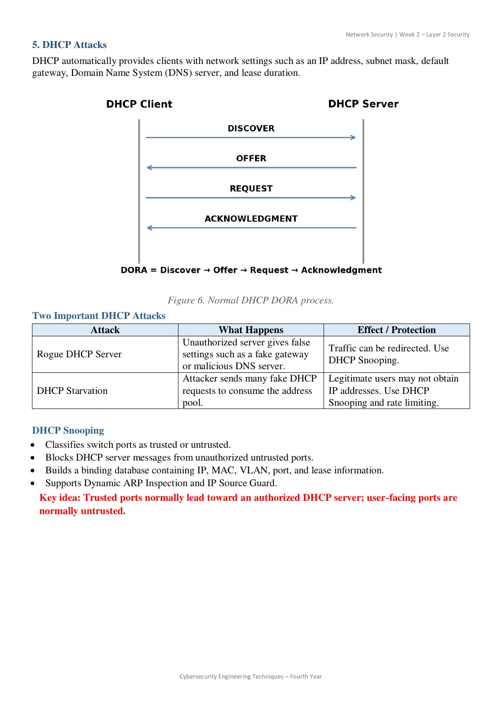
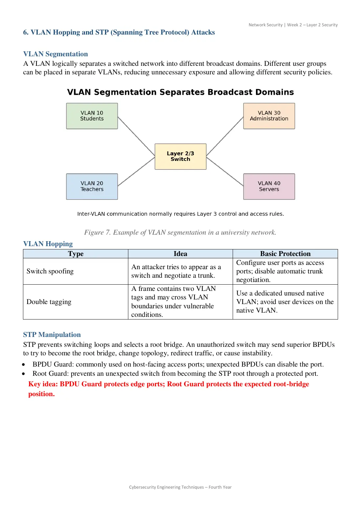
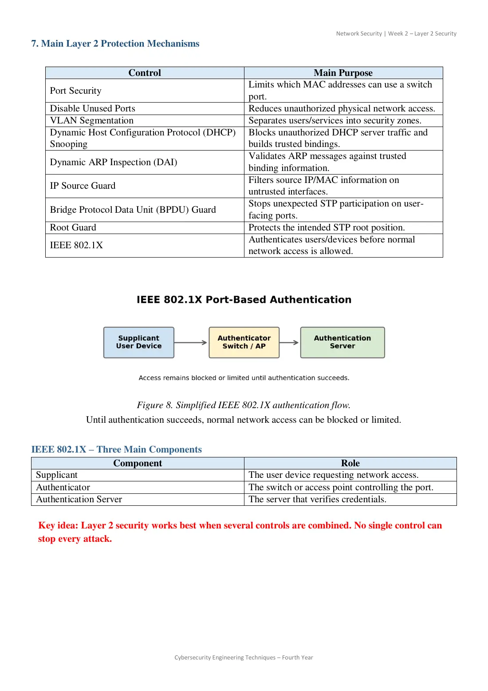
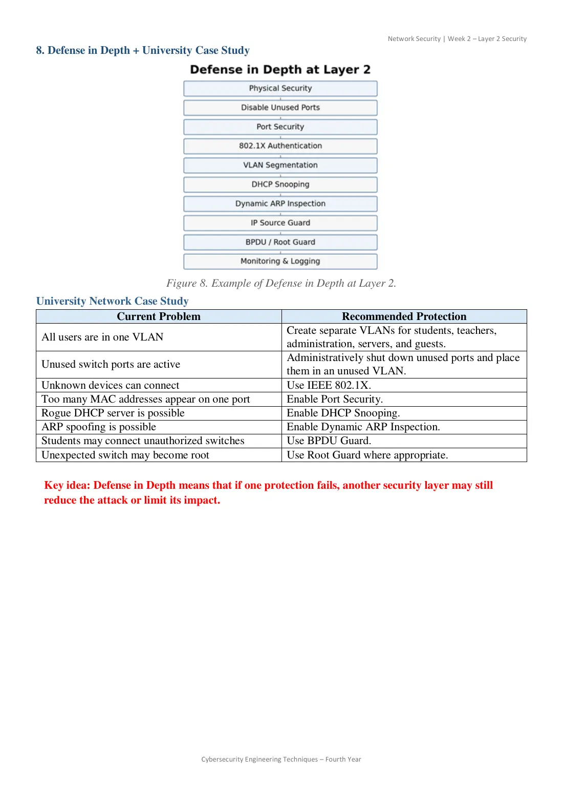
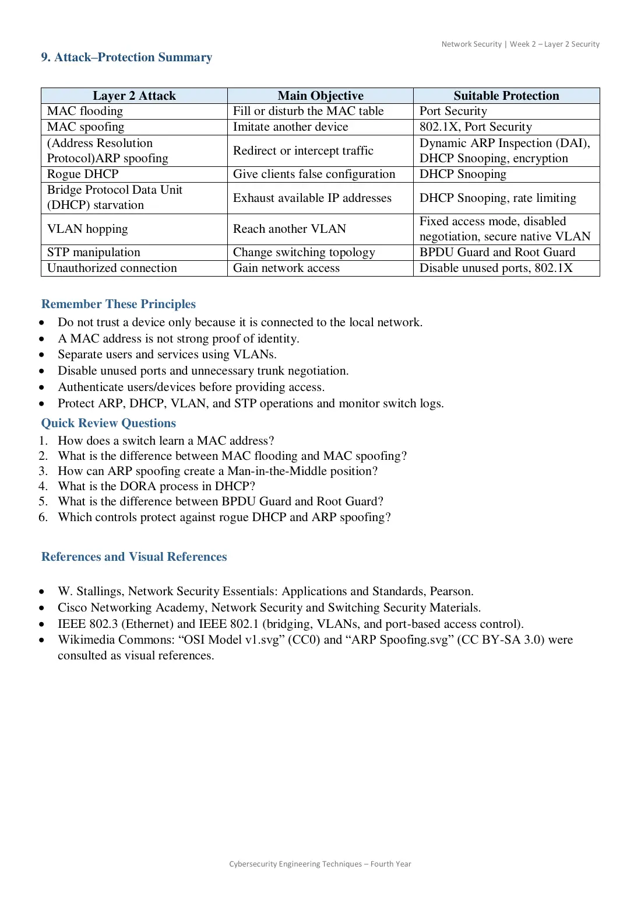

In exam9 pages · 1.3 MB Open original PDF ↗
Σ Read the summary: الطبقة الثانية والمصائب الآتيةDefinitions, Q/ questions and comparison tables ✎ Take the mock exam for this lectureTimed, sectioned like the real exam, with model answers and marks







